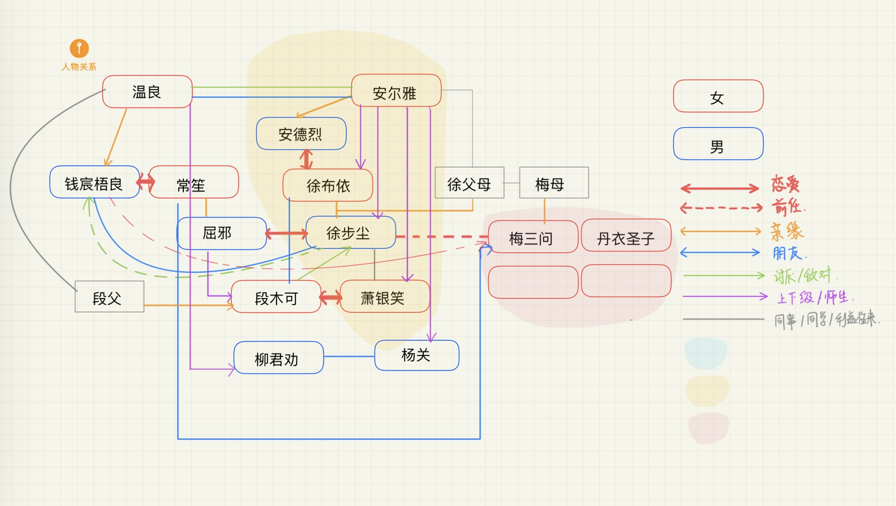

- 人 -
"卑鄙是卑鄙者的墓志铭"
“高尚是高尚者的通行证”
点击卡片查看详细介绍

？？？
更多角色正在补完中……

"卑鄙是卑鄙者的墓志铭"
“高尚是高尚者的通行证”
更多角色正在补完中……
"我和这个世界不熟，这并非是我选择死亡或者生存的原因"
“我依旧有很多选择，刚巧，这两者，都不是选项之一”
全称：All For Tomorrow
安尔雅建立的地下组织，以实验研究为主，势力渗透各个领域。
理念：为了更好的明天。
领导人：安尔雅。
Aft-欧西里斯研究所：以研究fmv靶向药物为主，成员：徐步尘、箫银笑等。
Aft-伊西斯研究所（绝密）：杨关为所长，意在从物理角度解释“上界”的存在形式与来源。
Aft也可称为Ann For Tomorrow,成立的初心只是为了满足安尔雅个人的理想。
全称：New All For Tomorrow
安尔雅阴谋破裂后，徐布依继承了原先的Aft。她整顿组织稳定人心，强调新的理念，将重点向积蓄力量革命方向引导，建立了Naft。
理念：为了我们更好的明天。
领导人：徐布依。
随着fmv真相揭露，Naft在靶向药物的引领作用，动荡年间势力迅速扩大，剑指当朝统治者。徐布依的也从未想过“成神”，
而是真正打通上界和人间，开辟新规则。
位于南部山间的一个隐蔽水池，没有水源，冬不结冰，被称作“天上水”，是人间与上界最直接的连接处。
环绕零池为一圈供奉“神灵”的庙宇，方便信徒修行维护。
作为“神灵”的代言，零池与世俗统治者有深切合作，每一年天子需到零池献上供奉，祈求“福祉”。
这里的上界，神灵并非超自然至高存在，而是在杨关的研究成功中被证实为概率化的曾经的人和事物，能对人间施加特别影响。
全称：伐桂计划/“桂”计划
由温良发起的计划，取自“吴刚伐桂”的故事，意为向神力的不断抗争。标志中的蛇为温良的象征，相互盘绕形成桂花形状。
温良在暗中借助皇室资源，调查关于上界的信息，从历史典籍中寻找线索，为成神寻找方法。同时也与安尔雅领导的伊西斯研究所
有合作，互相补充、帮助。合作仅限双方最高层，所以及其隐蔽。
保皇的保守党派与激进党爆发战争，保守党接连败退，民众情绪高涨。
温良、安尔雅出生。
天子神秘出现在零池，一段时间后，fmv病毒以极快速度爆发在激进党派间，战况迅速扭转。
激进派以毫无反抗之力，病毒蔓延使人心惶惶，将矛盾归于激进派。
同时段氏药业一举推出了针对fmv的疫苗，局势得到稳定。
随后，天子改国号为“尚”，使用新历，大力推崇信仰，宣称“神佑世人”，复兴祭神仪式。
fmv的传播得到控制，但仍在亲缘关系中少量传播。
因fmv患者多与当年战败激进派有关，社会对fmv患者对歧视日益严重。而fmv患者可定期向官方医疗点领取药物来控制病情。
杨关发表论文，证明了生命体概率化的可能性。
安尔雅建立Aft，试图寻找揭露阴谋的证据。
徐步尘与屈邪相遇，同年加入Aft。
徐步尘以屈邪实验对象，发现了针对fmv的特殊抗体，有关fmv的阴谋也被揭露，陷入动荡年代。
随后，安尔雅的真实目的也浮现出来，Aft内部逐渐趋于瓦解，徐布依加入。
……